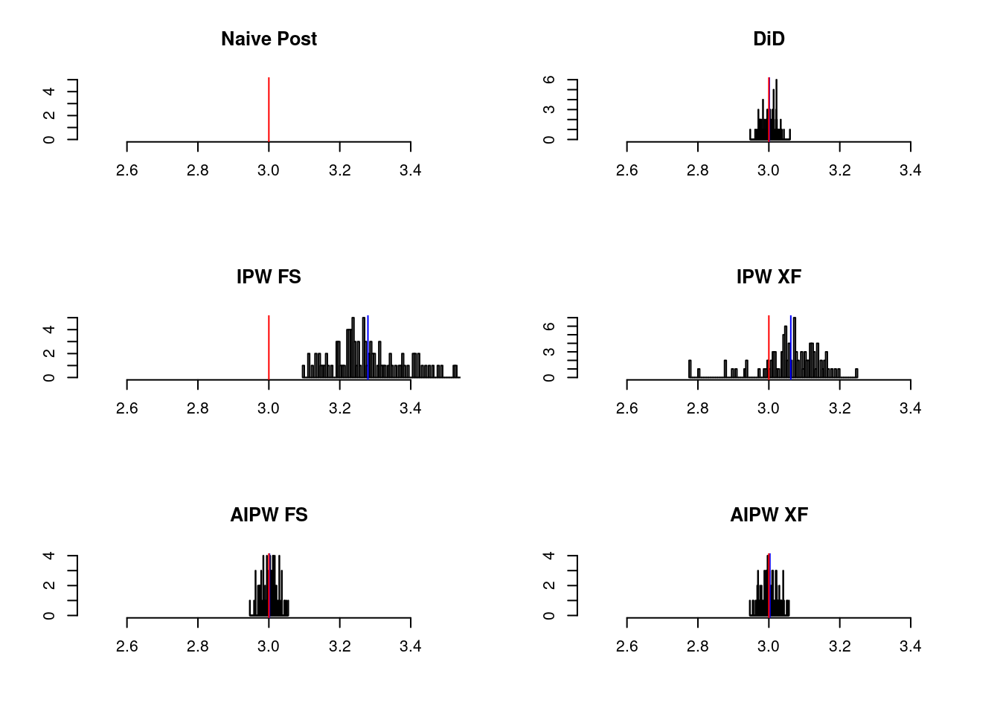
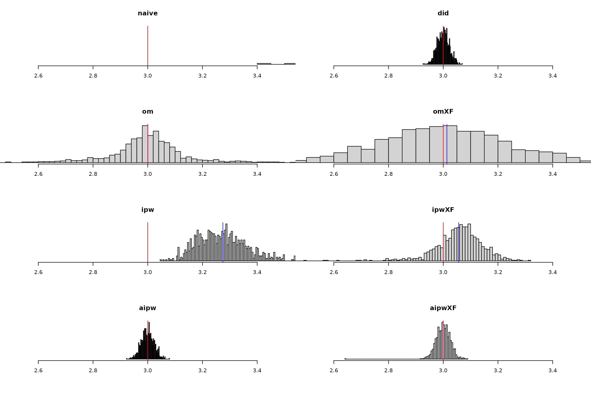

basics.rmdThe Abadie (2005) semiparametric IPW estimator for the 2-period ATT is
\[ \hat{\tau}^{\text{IPW}} = \frac{1}{N} \sum_i \frac{Y_i(1) - Y_i(0)}{P(D=1)} \frac{D - \hat{e}(X_i)}{1 - \hat{e}(X_i)} \]
The Chang (2020) double-robust AIPW estimator is
\[ \hat{\tau}^{\text{AIPW}} = \frac{1}{N} \sum_i \frac{Y_i(1) - Y_i(0)}{P(D=1)} \frac{D - \hat{e}(X_i)}{1 - \hat{e}(X_i)} - \frac{D - \hat{e}(X_i)}{P(D = 1) (1- \hat{e}(X_i) )} \hat{\mathcal{l}}(X_i, D = 0) \]
where \(\hat{e}(\cdot)\) is the
propensity score and \(\hat{\mathcal{l}}(\cdot)\) is an outcome
model for \(Y(1) - Y(0)\) regressed on
covariates in the untreated subsample. Both these functions are
estimated using LASSO(glmnet) using internal
cross-fitting.
## Loading required package: data.table
libreq(data.table, ggplot2)## wants loaded
## [1,] "data.table" TRUE
## [2,] "ggplot2" TRUE
options(repr.plot.width=12, repr.plot.height=9)
set.seed(42)
# %% ####################################################
knitr::opts_chunk$set(
echo = T, # don't show code
include = T, # show output
warning = F, # don't show warnings
message = F, # don't show messages (less serious warnings)
cache = T, # F unless runtime is very long
# root.dir = 'location_of_dependencies'
fig.align = "center"
)
library(sp2DID)## Loading required package: glmnet## Loading required package: Matrix## Loaded glmnet 4.1-4
# %% # DGP
simstudy = \(N=200, p=100, s=5, theta=3,
ρ = 0 # no parallel trends violation by default
){
# sparse signal in pscore
γ=c(s:1, rep(0, (p-s)))/s
X = array(rnorm(N*p), dim=c(N,p))
e = expit(X %*% γ)
D = rbinom(N,1,e)
beta1 = γ + 0.5
ε1 = rnorm(N,0,0.1); ε2 = ε3 = ε1
# potential outcomes
Y11=Y01=Y00=rep(NA, N)
Y00 = X %*% beta1 + ε1
Y01 = Y00 + 1 + ρ * e + ε2 # pscore enters outcome model
Y11 = theta + Y01 +ε3
# outcomes at two time periods
Y0 = Y00
Y1 = Y01*(1-D) + Y11*D
data.frame(Y1, Y0, D, X)
}
θ = 3
B = 100
oneRep = \(){
df = simstudy()
c(
# naive
with(df, mean(Y1[D==1]) - mean(Y1[D==0]) ),
# om
with(df, (mean(Y1[D==1]) - mean(Y0[D==1])) -
(mean(Y1[D==0]) - mean(Y0[D==0])) ),
# ipw
ipwDID(df[, -(1:3)] %>% as.matrix(), df$D, df$Y1, df$Y0, xfit = F),
ipwDID(df[, -(1:3)] %>% as.matrix(), df$D, df$Y1, df$Y0, xfit = T),
# aipw
aipwDID(df[, -(1:3)] %>% as.matrix(), df$D, df$Y1, df$Y0, xfit = F),
aipwDID(df[, -(1:3)] %>% as.matrix(), df$D, df$Y1, df$Y0, xfit = T)
)
}
tauhats = mcReplicate(B, oneRep(), mc.cores = 6)
ests = c(tauhats)
bounds = quantile(ests, c(0.05, 0.95))
lb = 2.5; ub = 3.5
tauhats = t(tauhats)
figm = \(x, t){
hist(x, breaks=100, main=t, xlab="", ylab="", xlim = c(lb, ub))
abline(v = mean(x), col = 'blue'); abline(v = θ, col = 'red')
}
par(mfrow = c(3, 2))
figm(tauhats[,1],"Naive Post")
figm(tauhats[,2],"DiD")
figm(tauhats[,3],"IPW FS")
figm(tauhats[,4],"IPW XF")
figm(tauhats[,5],"AIPW FS")
figm(tauhats[,6],"AIPW XF")
B = 10
oneRep = \(){
df = simstudy(ρ=1.5)
c(
# naive
with(df, mean(Y1[D==1]) - mean(Y1[D==0]) ),
# om
with(df, (mean(Y1[D==1]) - mean(Y0[D==1])) -
(mean(Y1[D==0]) - mean(Y0[D==0])) ),
# ipw
ipwDID(df[, -(1:3)] %>% as.matrix(), df$D, df$Y1, df$Y0, xfit = F),
ipwDID(df[, -(1:3)] %>% as.matrix(), df$D, df$Y1, df$Y0, xfit = T),
# aipw
aipwDID(df[, -(1:3)] %>% as.matrix(), df$D, df$Y1, df$Y0, xfit = F),
aipwDID(df[, -(1:3)] %>% as.matrix(), df$D, df$Y1, df$Y0, xfit = T)
)
}
# oneRep()
tauhats = mcReplicate(B, oneRep(), mc.cores = 6)
θ = 3
ests = c(tauhats)
bounds = quantile(ests, c(0.05, 0.95))
lb = 2.5; ub = 3.5
tauhats = t(tauhats)
figm = \(x, t){
hist(x, breaks=100, main=t, xlab="", ylab="", xlim = c(lb, ub))
abline(v = mean(x), col = 'blue'); abline(v = θ, col = 'red')
}
par(mfrow = c(3, 2))
figm(tauhats[,1],"Naive Post")
figm(tauhats[,2],"DiD")
figm(tauhats[,3],"IPW FS")
figm(tauhats[,4],"IPW XF")
figm(tauhats[,5],"AIPW FS")
figm(tauhats[,6],"AIPW XF")